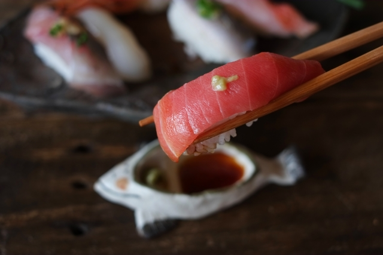
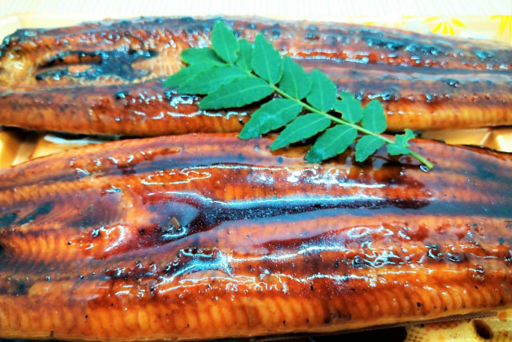
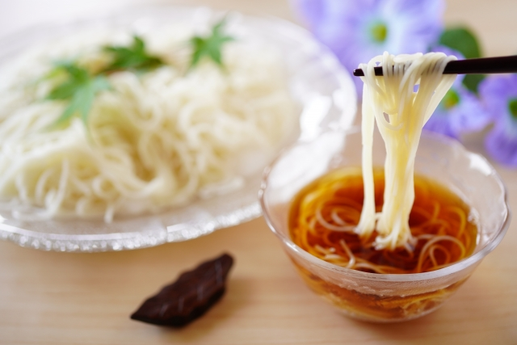

Restaurant WabiSabi
Sushi
一流の職人による洗練された味付け。小さな一口から夢幻の奥行が広がるひとときをお楽しみ頂けます。
traditional
創業100年。伝統的な調理法は古往今来変わらない美味しさの秘訣です。
Seasonal
旬の食材に拘り、その日の朝に産地直送された食材から四季折々の味覚をご提供いたします。
一流の職人による洗練された味付け。小さな一口から夢幻の奥行が広がるひとときをお楽しみ頂けます。
創業100年。伝統的な調理法は古往今来変わらない美味しさの秘訣です。
旬の食材に拘り、その日の朝に産地直送された食材から四季折々の味覚をご提供いたします。